Intro
Welcome to my website! I'm thrilled to have you here.
My name is Takwa, and I'm a firm believer in the power
of self-learning, particularly in the field of programming. I have a background in business and information
systems. From a young age, I've been captivated by the world of computers and all things related to technology.
The intersection of business and technology has always fascinated me, and I'm excited to be working as a Systems Analyst,
a role that bridges the gap between these two dynamic fields.
When I'm not immersed in the digital realm, I find solace in the world of art. It's a wonderful balance to the
logical and analytical aspects of my life, reminding me of the importance of creativity in problem-solving.
My ultimate goal is to forge a fulfilling career in computer science. I aspire to contribute to the
ever-evolving field, leveraging my skills and knowledge to push the boundaries of what is possible.
Through this website, I aim to connect with like-minded individuals, showcase my exciting projects,
and continue my personal and professional growth in computer science.
Thank you for joining me, and I hope you enjoy your time here!
______________________________________________________________________
Resume
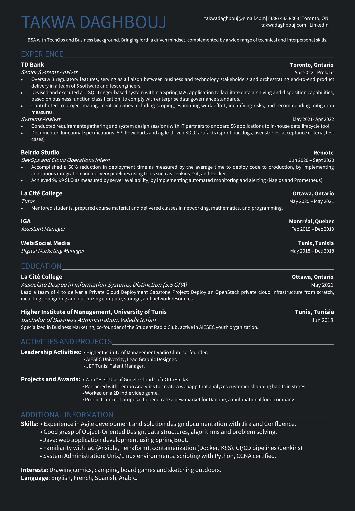
Projects
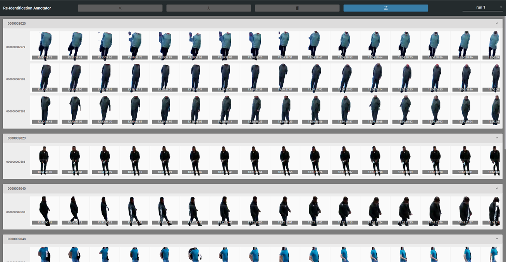
In order to effectively monitor and analyze customer behavior within business premises,
this web app was developed with Tempo Analytics serving as a tool for human annotators to manipulate image data sets
obtained from a deep learning algorithm that actively tracks customers while they are present in the establishment.
______________________________________________________________________
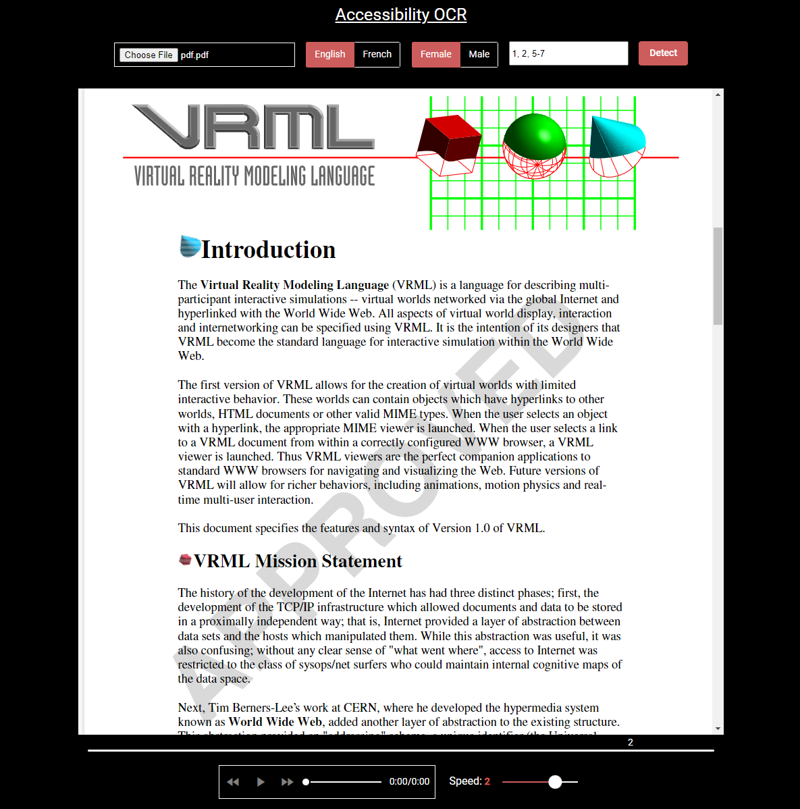
Text-to-speech web application that allows users to listen to the content of a PDF or image file uploaded into the app.
It utilizes natural language processing and optical character recognition to convert the text into audible speech, offering the option to select between male or female voices and alternate between multiple languages.
The tool comes with settings to adjust the speed, select pages and fast-forward or rewind the voice track to suit the user's preferences.
______________________________________________________________________
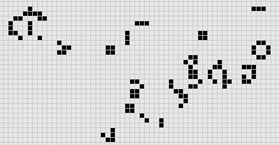
A Python implementation of Conway's Game of Life. It provides a graphical simulation where you can observe the evolution of a grid of cells based on the game's simple rules: cells can be alive or dead,
and by the end of each generation, their states change depending on the states of their neighboring cells.
The simulation allows you to set the initial configuration of cells and watch as patterns emerge and evolve in fascinating ways.
______________________________________________________________________
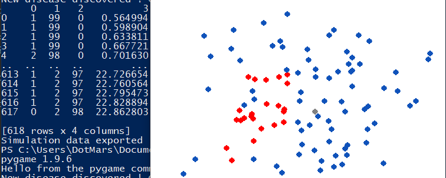
A small simulation to learn Python during the pandemic.
It visualizes the importance of social distancing in a fun way.
______________________________________________________________________
PERSON-RE-IDENTIFICATION ANNOTATOR
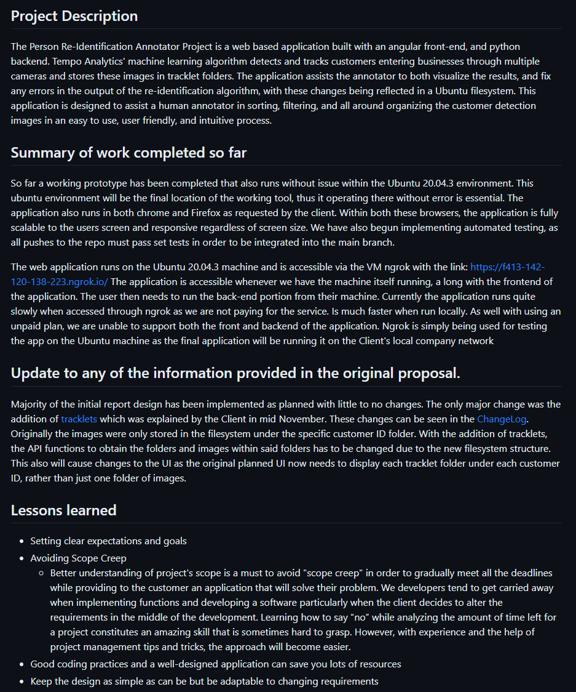
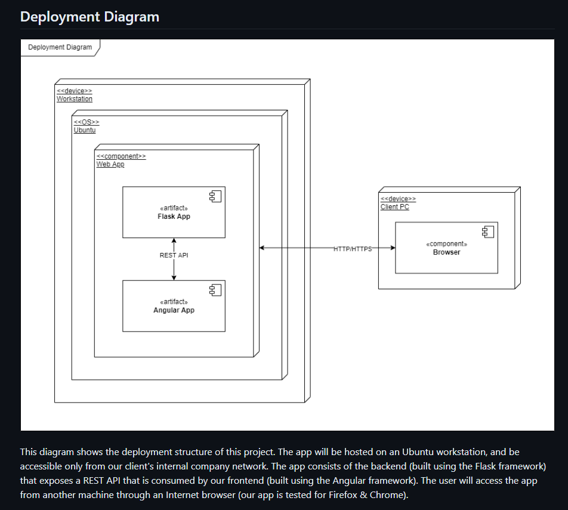
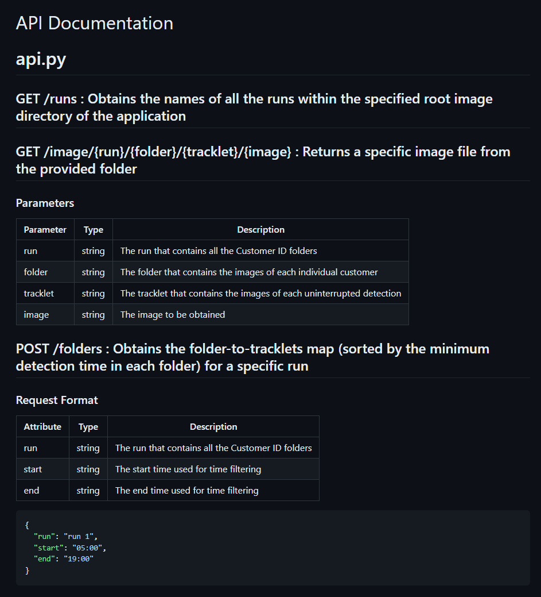
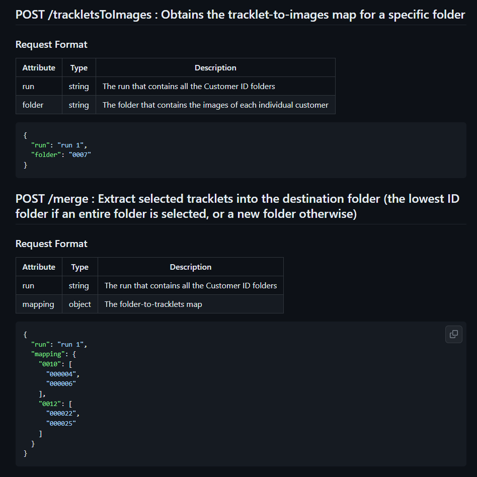
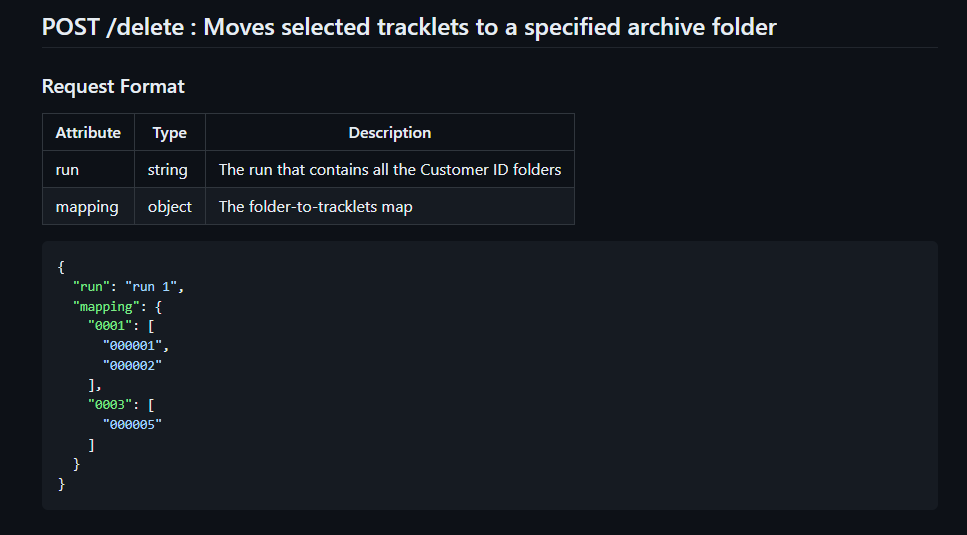
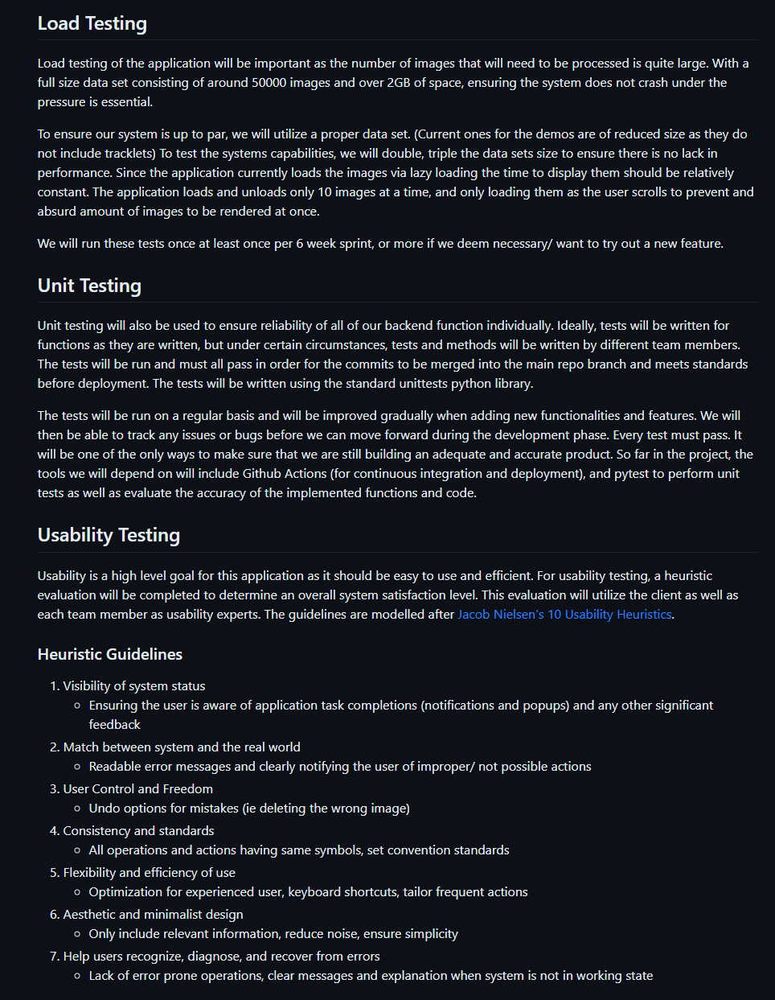
________________________________________________________________________________